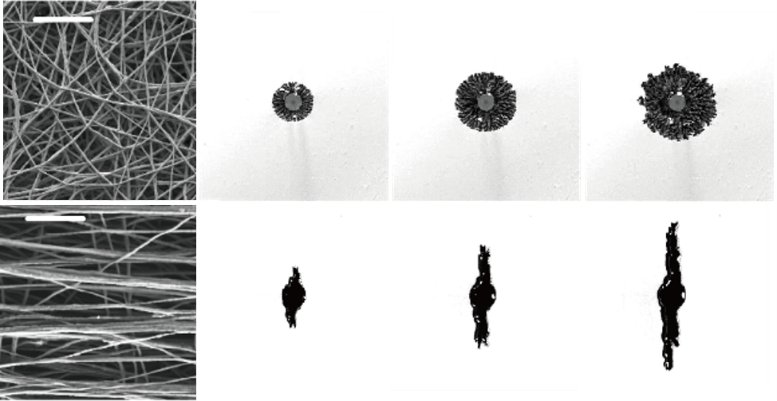

Solids that move fluids.
Fluids that reconfigure solids.
We study the physics at the intersection of fluids and soft solids.

Fluid transport and pressure drive deformation and functionality in soft matter

Geometry and deformation of soft solids shape fluid motion and flow structures
If our way of thinking resonates with you, feel free to reach out for a conversation.
Graduate and undergraduate research inquiries are welcome year-round.
우리의 연구가 궁금하다면 편하게 연락 주세요.
학부 연구 참여 및 대학원 진학 상담은 상시 가능합니다.